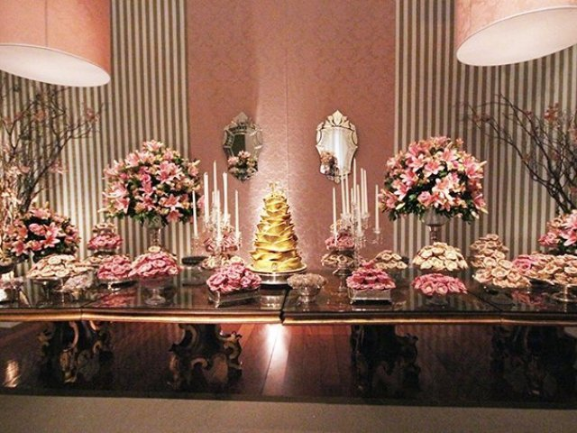
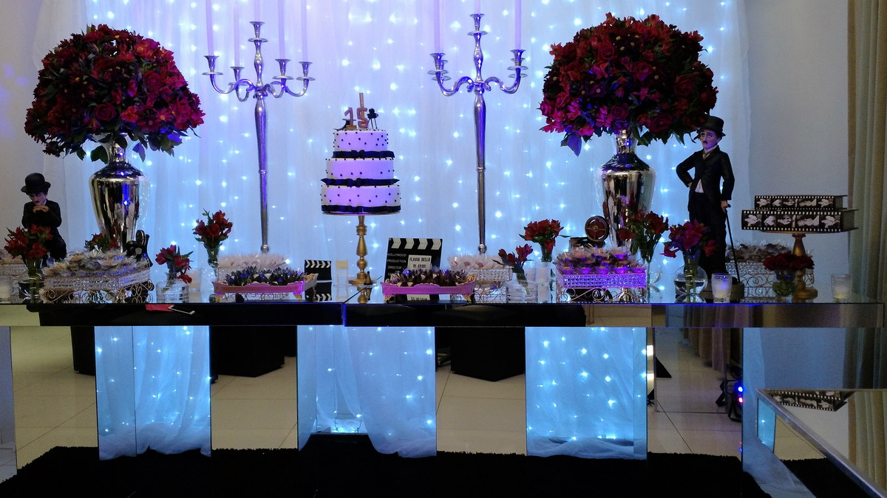

Festa de debutante:
Um pouco da tradição:
O baile de debutantes é um rito de passagem na qual as jovens são submetidas, geralmente sendo realizado quando as mesmas completam quinze anos. Completando o décimo quinto aniversário de uma mulher, pedia-se uma linda festa de comemoração, onde ela seria apresentada oficialmente à sociedade, começando assim uma nova fase de sua vida. A partir do seu "début", a jovem moça passava a frequentar reuniões sociais, a usar roupas mais adultas e tinha permissão para namorar. Normalmente, na recepção dos convidados, a garota usava um vestido bonito e simples, cheio de detalhes infantis, e depois da meia noite usava um lindo vestido de gala para dançar a valsa com seu pai; tudo para representar que ela deixava de ser menina para se tornar uma mulher.
Nossas categorias para festa de debutante:
• Festa de 15 anos Tradicional - Em que segue-se a tradição de maneira estrita. A debutante entra para a cerimônia, dança a valsa com os 15 casais e passa pela troca do sapato e do anel. A festa tradicional pode variar um pouco por estado brasileiro.
• Festa de 15 anos Moderna - Em que são mesclados traços de uma festa tradicionais com um festa moderna. A Debutante pode começar dançando a tradicional valsa e modifica-la no final com uma música e dança moderna - a chamada "valsa maluca".
• Festa de 15 anos Evangélica - Assim como a festa de 15 anos moderna, a festa de 15 anos evangélica também utiliza traços da tradição da debutante, mesclando-os com uma cerimônia evangélica.
• Festa de 15 anos Simples - Uma festa de 15 anos simples é muitas vezes uma opção para debutantes que buscam realizar a cerimônia sem gastar muito dinheiro. Muitas vezes esse modelo de festa é realizado em casa e conta com a tradicional Valsa.